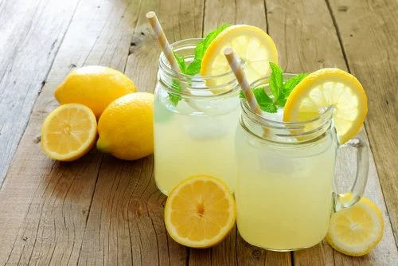

Limonada

]
Ingredientes
Para a preparação da limonada vamos precisar de:
- Água

- Limão

- Açúcar
Momento ideal para uma limonada
- Em um dia quente de verão: A limonada é uma bebida refrescante que pode ajudar a se hidratar e se refrescar em dias quentes.
- Em um dia quente de verão: A limonada é uma bebida refrescante que pode ajudar a se hidratar e se refrescar em dias quentes.
- Como acompanhamento de uma refeição leve: Muitas pessoas apreciam uma limonada com pratos leves, como saladas ou sanduíches.
- Como bebida de boas-vindas: Em algumas ocasiões, a limonada pode ser oferecida como bebida de boas-vindas em eventos sociais.
- Quando se deseja algo doce e azedo: Se você estiver com vontade de uma bebida doce e azeda, a limonada pode ser uma excelente escolha a qualquer momento.
Para mais informações presionar aquí.